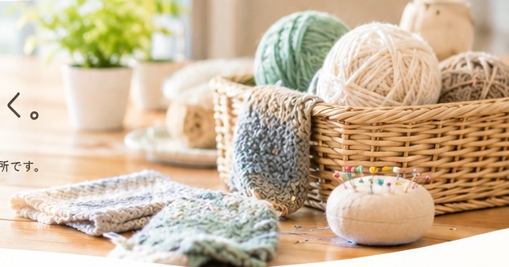
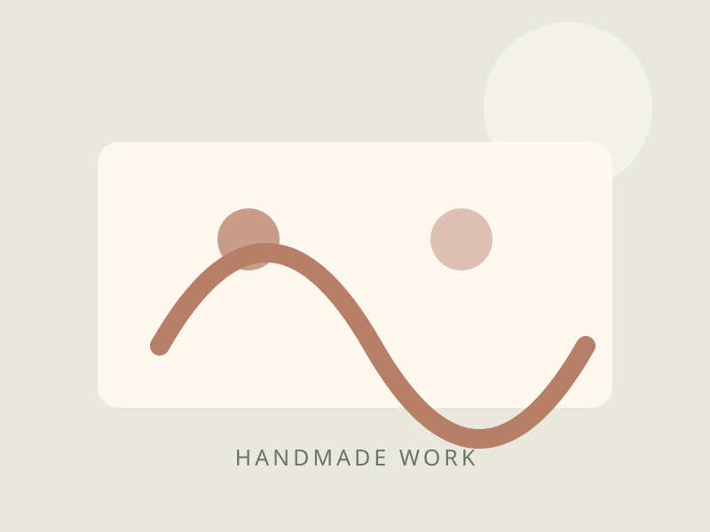
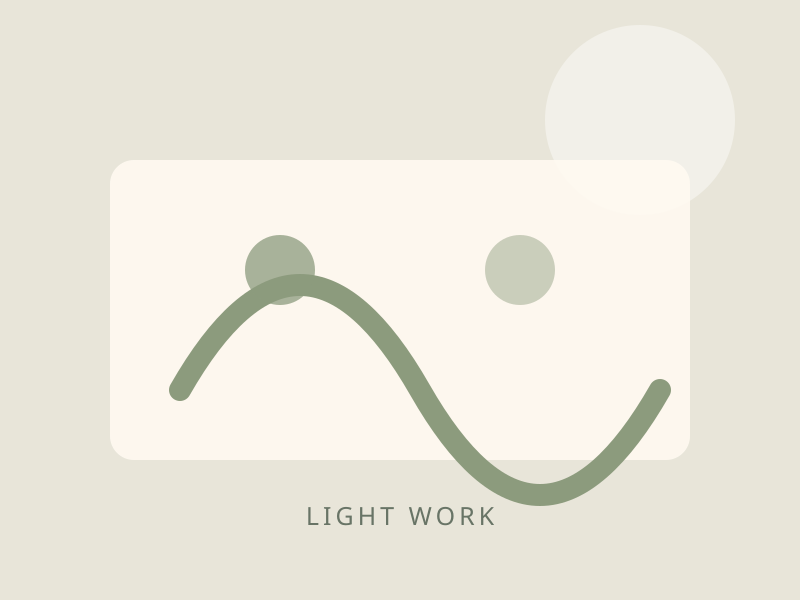
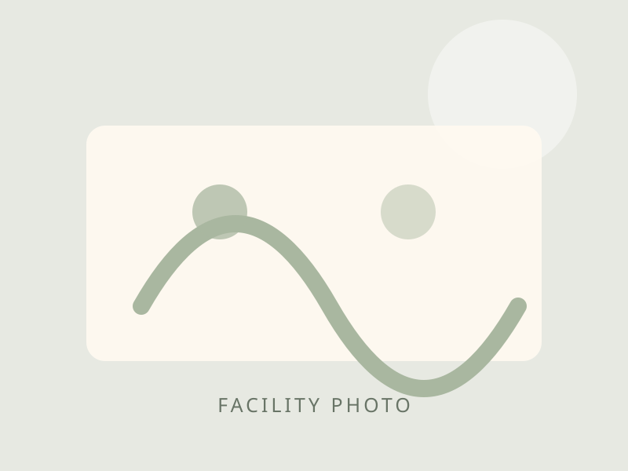
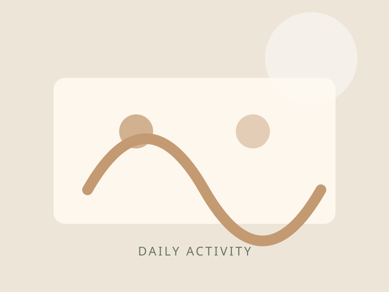
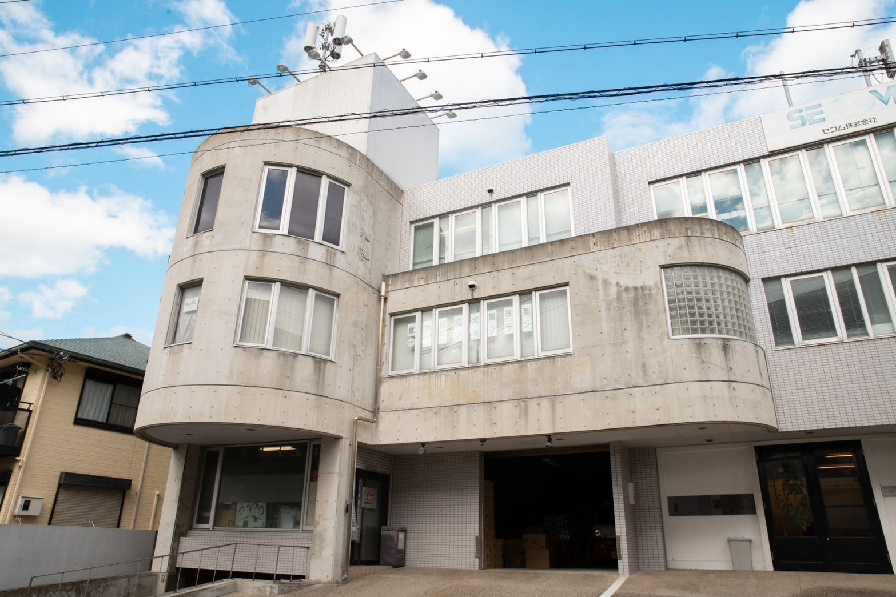

自分のペースで
作業にノルマはありません。焦らず、自分のペースで取り組めます。
就労継続支援B型事業所｜兵庫県西宮市
「やってみたい」という気持ちを大切に。
ものづくりや小さなお仕事から、
自分に合った働き方を一緒に見つけます。
週1日から・短時間利用もご相談ください

あなたらしい「働く」を、ここから。ここは、自分らしい一歩を見つける場所。
一人ひとりのペースや「やってみたい」という気持ちを大切にしながら、内職やものづくりなど、さまざまなお仕事に取り組んでいます。
無理なく自分に合った「働く」を一緒に見つけ、安心して過ごしながら豊かな経験を重ね、新しい可能性を広げられる場所を目指しています。
作業にノルマはありません。焦らず、自分のペースで取り組めます。
未経験の方も歓迎。一つずつ、できることから始めましょう。
生活リズムや体調に合わせた通い方を一緒に考えます。
お昼休みや3時のおやつなど、休憩時間も大切にしています。
毎日の仕事に、小さな発見とよろこびを。
手を動かすことを楽しむものづくりと、丁寧に仕上げる内職。
それぞれの得意や興味に合わせて取り組めます。

HANDMADEWORK 01 / CRAFT
素材に触れ、少しずつ形にしていく楽しさ。完成した作品はセレクトショップやマルシェなどで販売されることもあります。自分の手がけたものが誰かのもとへ届く、社会とのつながりも感じられます。

LIGHT WORKWORK 02 / LIGHT WORK
細長い紙を一本一本丁寧に巻き上げ、和ろうそくに使われる芯を作ります。
細い紙ひもを二つ折りにし、タグの穴に通して仕上げます。
あわてず、ゆっくり、一歩ずつ。
その日の体調やペースに合わせながら、活動と休憩をくり返して過ごします。下記は一例です。
今日も自分のペースで始めましょう。
自分に合った作業に、無理なく取り組みます。
集中したり、ひと休みしたり。自分のペースで進めます。
お昼を食べながら、ゆったりリフレッシュ。お弁当補助もご利用いただけます。
午後も気持ちを切り替えて、ゆっくりスタート。
刺繍や革小物など、楽しみながら「つくる」を体験します。
おやつを楽しみながら、ひと休み。
今日も一日、おつかれさまでした。
※ご利用曜日や短時間利用などもご相談ください。
WORK & REWARD
週5日・1日5時間利用の場合
※上記は目安の一例です。実際の工賃は作業内容や利用状況等によって異なります。詳しくはお問い合わせください。
あなたに合った通い方を、一緒に。
※在宅利用は、通所が難しい場合やご希望に応じて個別に対応を検討します。
電話またはメールでお気軽にご連絡ください。
事業所の雰囲気や作業内容を実際にご覧ください。
双方合意のうえ、利用開始に向けて手続きを進めます。
いつもの場所、いつもの風景。
施設や日々の活動の様子をご紹介します。



※外観写真は実際の建物です。施設内・活動風景の写真は準備ができ次第、差し替えます。
FOLLOW OUR INSTAGRAM
制作した作品や、クランで過ごす日々の様子をご覧ください。
FIRST STEP
「どんな場所なのか見てみたい」
「自分にできる仕事があるか相談したい」
そんな方も、どうぞお気軽にご連絡ください。